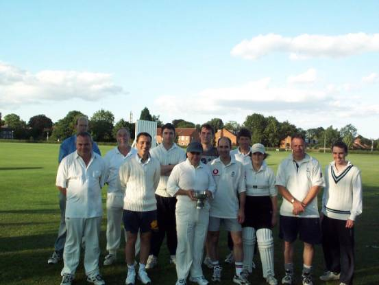

Staff League History
How long has there been a staff cricket league? I don't know, so I asked someone who does - Dave Lindsey.
Dave got a job in Chemistry April 1980, and after playing for one season and organizing statistics at the end of the year the Chemistry porter presented him with 5 score books going back to 1973. ``It was like getting the Dead Sea scrolls! Why were we playing `Fulford Working Mens Club'? Why were we called `The Jesters'? Who is this guy who took 5-2?''
The situation in 1980 was that all cricket was only played during the summer term. At the end of June the cricket pitches were roped off , the ground staff began their holidays and in September started rugby and football.
``So there were the 3 university teams; then there was the college league (Tuesdays and Thursdays, Oak Tree and 2nd team pitch); 1st and 2nd college teams, as now. Then there was the casual league. This was divided into 2 sections A and B, but divided at random, so that each section contained a mixture of undergrad and staff teams. But it all had to finish in week 9. So each section had 6 teams (i.e. 5 games) and then in week 9 theoretically the 2 top teams played one another. This never happened because in week 9 the undergrads are permenantly pissed.
``Anyway it was difficult. The casual league was supposed to be Wed, Fri, and Sunday afternoon, 15 x 8 ball overs. Staff didn't want to come back on Sunday, sometimes the undergrad teams were very good, sometimes they really pissed about or didn't turn up at all.''
``So in 1982 Jim Briggs and I decided to change things. At that time part of computer science was in the chemistry building so I saw a lot of Jim. Initially we asked Colin Smith if we could go on arranging friendlies in July and August, paying to hire the pitch. The sports centre came to some arrangement with ground staff and in 1982 we played sunday and evening friendlies on Oak Tree square.....I think until the end of July, or middle of August. Then in early 1983, we went again and said to Colin `why does the casual league have to end at the end of June when staff and postgrads are here right through the summer. Can't we have a seperate league for staff teams?' And the staff league was born. 1983. The other half of the casual league stayed as it is now.
``I know Computer science won in 1983 because it rained a lot and they played more games than us. The late eighties Biology were dominant, early nineties Ad-Lib were strong. During the rest of the Nineties it was generally a battle between Ad-Lib and Chemistry. But since 2000 the League has expanded and teams have generally become stronger. Politics/English (Plonge) now have a good team and Biology are back. PDP had a great year in 2002 and Smith and Nephew often put out a good side. More weekend cricketers are playing and bigger Departments mean an influx of talent. The League has really never been healthier.’’
More history to follow - all contributions welcome.
HERE IS A PICTURE OF THE LEAGUE CHAMPIONS IN 2003

 UoY Staff Cricket Website
UoY Staff Cricket Website  Send us mail
Send us mail